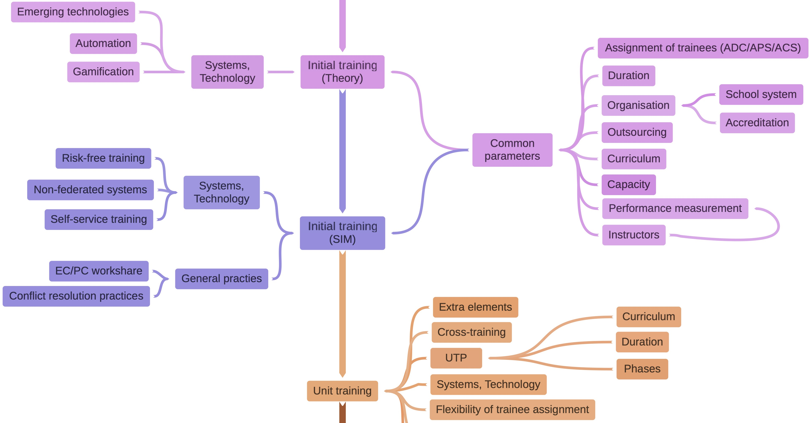

Initial training
Initial training develops the knowledge, skills and operational foundations needed for later qualification. Its design affects unit-training needs, success rates and mobility.
Initial training

Initial (or ab initio) training represents the central transformation mechanism in the ATCO lifecycle, converting strategic intent and organisational design into individual operational competence. Through a combination of theoretical instruction and simulator-based exercises, initial training establishes the foundational mental models that controllers will rely on throughout their careers to provide safe and efficient air traffic control services. Decisions made at this stage have long-lasting effects, as they shape how controllers perceive traffic situations, prioritise tasks and interact with both colleagues and technical systems.
At the same time, initial training must evolve in step with broader technical developments in ATM. As operational environments become increasingly digital, data-driven and automation-supported, training environments can no longer rely primarily on traditional classroom instruction and static simulation. Greater use of computer-based training and interactive learning modules is required to reflect how controllers will interact with modern systems in practice.
Strategic decisions
ANSPs need to make strategic decisions when designing initial ATCO training. These decisions may be deeply embedded in culture or history and, in some cases, may even fall outside the remit of ANSP management, requiring government decisions or local policy actions to change. The two fundamental decisions are:
- The form of the training: is it part of the school system (accredited education)? Does it offer a diploma?
- Is it outsourced to a private or semi-private training organisation, or is it conducted in-house?
- How is initial training financed?
ANSPs in Europe adopted almost all available combinations of these decisions: in France, initial training is part of the school system, and ATCO students receive an accredited university bachelor's degree. In Spain, ATCO students are trained by fully privatised training organisations, and finance their own training. In Finland, initial training is done in a dedicated state-owned ATCO training academy and is financed from the state budget. In Belgium, Denmark, Hungary, Ireland, and Sweden, initial training is outsourced by the ANSPs to a partially owned joint-venture training academy and is financed by the ANSP. ANS Czech Republic trains ATCOs at a dedicated training academy owned by the ANSP, yet other ANSPs send their ATCO students abroad to private training organisations.
These decisions are, in principle, management decisions aimed at optimising processes and maximising efficiency. As such, they have direct impacts on costs, lead times, and content, as well as on training capacities, durations, and other aspects. ANSPs reported unforeseen impacts stemming from such decisions, such as declining quality, mismatches between required and acquired trainee competencies, and missing skills.
Whichever decisions are made, ANSPs need to define detailed specifications for all aspects of the training process and must actively enforce them throughout initial training, regardless of the organisational setup used.
Curriculum and duration
Arguably, one of the most important aspects of initial training (and ATCO training in general) is the curriculum, which specifies the topics, skills, and competencies that must be taught to and mastered by ATCO trainees. The minimum requirements for content and duration are set out in Implementing Regulation (EU) 2015/340 and in the AMC and GM documentation provided by EASA. However, ANSPs still retain a high degree of freedom in defining and packaging the curriculum's contents.
While the material in this stage of the training is fairly generic, ATCO trainees are already being conditioned by certain principles and practices. This conditioning needs to be aligned with what is required in the later phases of the training, and, ultimately, during live operations.
The duration of initial training varies across European states, ranging from a few months to three years, indicating that it depends on operational characteristics, cultural aspects, and management decisions. The training duration is also a key parameter in planning operational resources, as it determines ANSPs' response time to traffic increases and/or capacity shortages.
Training capacity and flexibility
There are large variations in training capacity across ANSPs in Europe: the share of trainees entering the initial training phase ranges from 2% to 49% of total operational staff, and these figures are not only driven by the size of the ANSPs (though the four largest ANSPs display similar values, between 11% and 14%). ANSPs with similar staffing levels and comparable operational environments exhibit different training capacities, indicating that ab initio training capacity is shaped by management decisions rather than by operational constraints. On the other hand, the initial training capacity is usually constrained by the capacity of the unit training, which in turn is determined by the number of active ATCOs in operations, the number of available instructors, and various operational factors (such as seasonality).
ANSPs have different schemes for assigning ATCO trainees to training courses (i.e., courses specific to aerodrome, approach, or area controllers). The examples range from trainees going through all courses to trainees being assigned to a single course at the beginning of training (if not already during the selection phase), and everything in between. This decision has a profound impact on the outcome of the training, as greater flexibility at this stage enables higher success rates and potentially more flexible use of ATCO resources later. It is yet unclear what the drivers are behind some of the less flexible practices we observe.
Instructors, performance measurement
While EU regulations do not require instructors of the ab initio training to be active, licenced controllers, some ANSPs maintain such practices, presumably to ensure training quality and the alignment with unit training and live operations. This puts operations under more pressure and may limit training capacity if traffic demand requires ATCOs to focus on operational duties. However, in most cases, instructors in the ab initio training phase are not active controllers, but have operational experience and typically served as ATCOs during their careers.
Apart from the curriculum, and probably even more so, instructors, their experience, their pedagogical capabilities, and their professional dedication are absolutely key in all phases of the training. This is even more pronounced during initial training, as most of the conditioning of controllers occurs in this phase. This is valid not only for operational knowledge and practices but also for cultural, social, and behavioural aspects. The relationship between the ab initio instructors and the trainees will shape ATCO students' expectations towards the unit training phase and, later, towards the management of ANSPs.
An important aspect of that relationship is how performance is measured and discussed. ATCO students are typically evaluated continuously and receive frequent feedback on their performance; however, there are still variations between training organisations and ANSPs in how trainees demonstrate their competencies. Practices include one-off exams where trainees can pass or fail (which often means falling out of the process). However, there are also more process-focused practices that still require trainees to acquire competencies during training but assess them through continuous monitoring rather than one-off exams.
An additional, often overlooked, aspect of the instructor-trainee relationship is the instructor's performance and the methods by which it is measured. Considering the central role of instructors in the process, improving performance here may have a significant and far-reaching impact. Still, ANSPs typically dedicate less management attention to this part.
Training technologies and methods
Technology and learning applications have undergone a dramatic evolution over the past decade, and the pace of development appears to be accelerating. We are now past the point where technology was all about digitalising training material, using slide shows instead of blackboards during classroom training, and handing out tablets instead of paper copies. Today, the costs and effort associated with developing dedicated learning applications, creating virtual environments, and interacting with machines in general are orders of magnitude lower than they were 10 years ago. All these changes pave the way for the use of new systems and technologies in ATCO training as well.
The typical theoretical initial training course in Europe features at least some level of digitalisation: students work with tablets/laptops, receive training material digitally, and classroom sessions involve presentations of digital material, the registers and administrative modules of the training are also typically digitalised. However, this does not change the logic and approach of the training methodology; it only transforms the training material.
Emerging technologies
Even without considering the latest developments in artificial intelligence, and without being overly optimistic about its potential applications, it is safe to say that today, there is already an array of emerging technologies which could be implemented in ATCO training. These could, among others:
- Change the ways people interact with machines and learning systems, making use of speech technology
- Significantly reduce the effort and time required to create content and design training material
- Alter the way students consume information by using augmented and virtual reality
- Enable process automation beyond previous limits.
- Mix elements of the training that were previously separated due to technical constraints (i.e. mixing theory with simulation)
Automation
We already mentioned how technological developments enable process automation. Its potential is further underscored by the fact that the critical resources in ATCO training are the instructors and the experts who design and maintain the training material. The availability of this staff defines training capacity, affects the length of training, and drives costs.
With the widely accessible technologies, many modules and parts of the training could be automated. This would not only reduce workload and increase productivity, but could also enable real-time feedback, customised learning paths, and non-linear exploration of training material, to name only a few options. The interaction between instructors and trainees would still be essential to training success, but it could be transformed to focus on social, collaborative, and communication aspects.
Gamification
Gamification introduces elements such as challenges, levels, feedback and rewards into training. Its use in ATM training offers potential to improve engagement and motivation.
Simulation technology and applications
We have already seen how technology may transform theoretical training and blur the lines between theory and practical training. This also applies to the simulation phases of initial training. ATC simulators have historically been highly specialised, federated systems running on large servers. Their manipulation, maintenance, and development required specialists experienced with programming and coding, and their integration with other systems and applications was out of question.
With today's technology, an ATC simulator could be fully virtualised and integrated with other applications, paving the way for restructuring and reimagining the training process. This could also enable trainees to have more practice time in risk-free training environments (even at home), create opportunities for self-service training for those who benefit from a non-linear training process, and, in general, bring the benefits associated with non-federated systems, such as more flexibility and more options for customising.
Despite their enormous potential, ANSPs and training organisations are slow to implement new technologies and transform ATCO training utilising the new tools and opportunities they bring. Apparently, there are significant differences in local interpretations of European regulations on whether these changes comply with current requirements. However, the fact that early examples already exist and operate under the same regulatory framework shows that regulatory constraints may only be local, existing in local legislation or in local ATM and training culture and interpretation.
We already noted the importance of initial training from a conditioning perspective: ATCO trainees learn and master the fundamental concepts, mental models and tools, behavioural patterns, and communicational and interpersonal skills required for air traffic control during this phase. Given the nature of the profession, a significant part of the learning process relies on conditioning: forming almost unconscious habits and engraining reactions in trainees' behaviour until they become second nature, so that they can cope with complexities, stressful situations and unexpected outcomes.
In Europe, we have seen significant differences in general practices across ANSPs and ATS units: differences in how ATCOs are expected to resolve traffic conflicts, which tools they can use, and how work is shared between executive and planning controllers (not to mention single ATCO operations). There are also significant differences in what ANSPs expect from ATCOs in general. While some ANSPs focus more on core operational knowledge and prefer ATCOs with already highly specialised knowledge at the end of initial training, others require ATCOs to have broader knowledge of operations and air transport in general.
This means that either the initial training needs to be tailored to the ATS unit and its operational practices, or greater harmonisation is required across general operations. However, customising initial training for specific ATS units might reduce the mobility of future ATCOs.
Initial-training challenges and measures
Initial Training encompasses the activities through which trainees acquire the theoretical knowledge, practical competencies and simulator experience required before entering the operational environment. As discussed previously, this assessment combines the Theory and Simulator phases of training, as stakeholders generally identified challenges and solutions affecting the initial training process as a whole rather than one specific phase in isolation.
Initial Training received Low Incidence and Medium Severity classifications. It was not generally seen as a principal network bottleneck, although stakeholders reported constraints on training efficiency, throughput and resources.
The consultation process revealed broad agreement among ANSPs regarding the importance of maintaining training quality whilst seeking opportunities to improve efficiency and scalability. Stakeholders consistently highlighted the need to increase training throughput without compromising competency standards and recognised that simulator and instructor resources remain key constraints in many training systems.
At the same time, differing approaches were observed regarding the design and delivery of initial training. ANSPs expressed divergent views on the degree to which training should be generic or tailored to local operational environments, as well as on the balance between classroom learning, simulator activities and operational exposure. These differences reflect the diversity of operational environments and training models currently in place across the European ATM network.
The challenges identified within Initial Training are largely associated with the structure, capacity and scalability of the training system. Stakeholders highlighted the difficulty of increasing training output without creating additional demands on instructors, simulators and other specialised training resources. Several challenges also reflect the absence of common approaches across the network, limiting opportunities for harmonisation and resource sharing.
Challenges reported in Initial training (Source: Consortium assessment)
| ID | Challenge | Rationale | ANSPs reporting |
|---|---|---|---|
| TL-IT.1 | Lack of consensus on generic versus unit-specific training | ANSPs differ in their views regarding whether initial training should be delivered using generic operational environments or tailored to specific units. While generic training may be easier to standardise and scale, unit-specific training may better prepare trainees for subsequent operational phases. | 9 (53%) |
| TL-IT.2 | Limited opportunities for independent practical training | Trainees often require access to supervised simulators and instructors in order to practise, limiting the amount of training that can be undertaken independently and constraining overall training throughput. | 6 (35%) |
| TL-IT.3 | Limited interoperability between training systems | Differences in simulator platforms, training systems and exercise design reduce opportunities for sharing training material and resources between ANSPs, resulting in duplication of effort across the network. | 4 (24%) |
| TL-IT.4 | Lengthy initial training programmes | Several stakeholders consider that elements of the initial training process could potentially be streamlined or reorganised, although any reduction in duration must preserve the competencies required for safe operational performance. | 4 (24%) |
| TL-IT.5 | Difficulties in expanding simulator capacity | The acquisition and deployment of additional simulator resources can require lengthy procurement and implementation processes, limiting the ability of training organisations to respond rapidly to increased demand. | 3 (18%) |
| TL-IT.6 | Limitations of simulator-based competency assessment | Certain operational competencies remain difficult to replicate or assess consistently within simulated environments, limiting the extent to which simulator performance alone can be used as a measure of operational readiness. | 3 (18%) |
The challenges identified within Initial Training reflect the need to balance efficiency, scalability and training quality. Rather than identifying a single dominant bottleneck, stakeholders described a series of interrelated constraints affecting how quickly and effectively trainees can progress through the early stages of the ATCO pipeline.
The most frequently reported challenge concerns the absence of a common approach regarding the degree of operational specificity that should be incorporated into initial training. Stakeholders expressed contrasting views on whether training should prioritise standardisation and scalability or early familiarisation with local operational environments. At the same time, several ANSPs highlighted constraints related to simulator availability, instructor resources and the limited opportunities for trainees to practise independently, all of which reduce the flexibility of the training system.
The consultation also highlighted challenges associated with fragmentation across the European training landscape. Differences in training systems, simulator platforms and programme design limit opportunities for resource sharing and increase the effort required to develop and maintain training material. Although these issues are not generally perceived as critical bottlenecks in isolation, together they influence the efficiency and scalability of the training process and therefore affect the ability of ANSPs to increase future training output.
The identified solutions focus on improving the efficiency and flexibility of initial training whilst preserving training quality and safety standards. Most measures seek to increase training throughput by making better use of existing resources, reducing unnecessary delays and providing trainees with additional opportunities to acquire competencies outside resource-intensive training environments.
Main solutions for Initial Training (Source: Consortium assessment)
| ID | Solution | Challenges addressed | Time horizon | Control over the solution | Model variables affected |
|---|---|---|---|---|---|
| TL-IT.BP.1 | Integrate theoretical and simulator-based training activities through progressive practical exposure | TL-IT.4 TL-IT.5 | Medium | Internal | Training capacity |
| TL-IT.BP.2 | Introduce earlier exposure to local operational environments | TL-IT.1 | Medium | Internal | Training duration |
| TL-IT.BP.3 | Expand the pool of instructors supporting theoretical training | TL-IT.2 TL-IT.4 | Medium | Internal | Training capacity |
| TL-IT.BP.4 | Progressively increase simulator complexity throughout training | TL-IT.4 TL-IT.6 | Medium | Internal + Technology | Training duration Success rate |
| TL-IT.BP.5 | Integrate theoretical and practical learning progressively | TL-IT.4 TL-IT.1 | Medium | Internal | Training duration Success rate |
| TL-IT.FP.1 | Deploy virtual training environments for independent practice | TL-IT.2 TL-IT.5 TL-IT.6 | Medium | Internal + Technology | Training capacity Training duration |
| TL-IT.FP.2 | Increase recognition of simulator-based training activities | TL-IT.2 TL-IT.4 | Medium | Internal + External | Training capacity |
| TL-IT.FP.3 | Promote interoperability of training systems across the European network | TL-IT.3 TL-IT.4 | Long | Internal + External | Training capacity |
The identified solutions seek to improve the efficiency of Initial Training without reducing competency requirements. Accordingly, most measures influence Training Capacity, Training duration and, in some cases, the Success Rate by improving the way training resources are used and by facilitating trainee progression through the pipeline.
Several best practices focus on optimising the structure and delivery of training programmes. Measures such as progressively increasing simulator complexity, integrating theory and practice more closely, and providing earlier exposure to operational environments seek to improve learning efficiency whilst maintaining training quality. Other practices focus on making better use of existing resources by expanding the pool of instructors involved in theoretical training and reducing unnecessary competition for operational personnel.
A second group of solutions addresses the capacity constraints highlighted during the consultation process. Virtual training environments and increased recognition of simulator-based training activities seek to reduce reliance on scarce operational resources and provide trainees with additional opportunities for practice and competency development. These measures directly address concerns regarding simulator availability and instructor workload.
Finally, several solutions seek to improve cooperation and harmonisation across the European ATM network. Greater interoperability between training systems and simulation platforms would facilitate the sharing of training resources and reduce duplication of effort between ANSPs. Together, these measures aim to increase the scalability and flexibility of Initial Training, enabling ANSPs to respond more effectively to future workforce requirements.